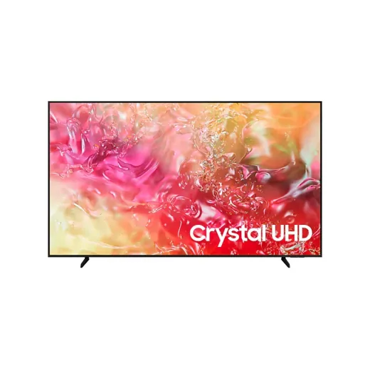
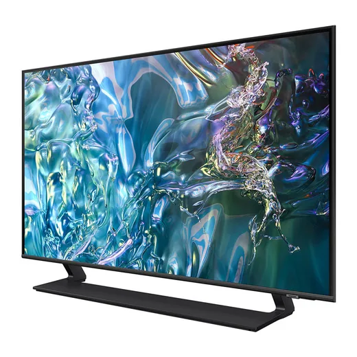

Samsung · Modelo UN65U8000H
Televisor Samsung 65" LED 4K · UN65U8000H
L 11,997
Más barato en La Curacao · ahorras hasta L 1,502 frente a la tienda más cara
Precio en cada tienda
| Tienda | Precio | Antes | Disponibilidad | |
|---|---|---|---|---|
| La Curacao | L 11,997 | Disponible | Ver en tienda › | |
| RadioShack | L 11,997 | Disponible | Ver en tienda › | |
| Diunsa | L 12,590 | Disponible | Ver en tienda › | |
| Gallo más Gallo | L 13,495 | — | Disponible | Ver en tienda › |
| Elektra | L 13,499 | Disponible | Ver en tienda › |
Precios referenciales tomados de cada tienda el 21 de noviembre de 2026. El precio válido es el que muestra la tienda al comprar.
Historial de precio
Lo seguimos desde el 1 de noviembre. Precio más bajo registrado: L 11,997 en La Curacao (20 de noviembre), igual que hoy. Cambios de precio registrados: 14.
Características
| Tamaño | 65" |
|---|---|
| Marca | Samsung |
| Modelo | UN65U8000H |
| Panel | LED |
| Resolución | 4K UHD |
| Procesador de Imagen | Crystal Processor 4K |
| Alto Rango Dinámico (HDR) | HDR10+, HDR y HLG |
| Sistema Operativo | Samsung TizenOS |
| Potencia de Salida | 20W RMS (Sistema de 2.0 canales) |
| Conectividad Inalámbrica | Wi-Fi y Bluetooth |
Descripción
El televisor Samsung de 65 pulgadas UN65U8000H tiene una pantalla grande con Smart TV integrado, pensada para salas donde se disfruta el cine, los deportes o las series en familia. Es una opción práctica para quien busca dar un salto de tamaño real frente a una pantalla más pequeña. Samsung es una de las marcas más reconocidas en electrónica de consumo, lo que da confianza en la compra.
Pantalla:
Audio:
Puertos e Interfaces:
3 HDMI
2 USB 2.0
1 Puerto Ethernet
1 Salida de Audio Digital Óptica
Otros televisores Samsung
 Televisor Samsung 55" QLED 4K Smart · QN55Q6FAAL 11,994.99En 2 tiendas · más barato en Lady Lee
Televisor Samsung 55" QLED 4K Smart · QN55Q6FAAL 11,994.99En 2 tiendas · más barato en Lady Lee Televisor Samsung 58" LED 4K SmartL 11,994.99En Lady Lee
Televisor Samsung 58" LED 4K SmartL 11,994.99En Lady Lee Televisor Samsung 55" Mini LED 4K · UN55M70HAL 11,495En 4 tiendas · más barato en Lady Lee
Televisor Samsung 55" Mini LED 4K · UN55M70HAL 11,495En 4 tiendas · más barato en Lady Lee Televisor Samsung 65" LED 4K · UN65U8000FL 12,499En 3 tiendas · más barato en Elektra
Televisor Samsung 65" LED 4K · UN65U8000FL 12,499En 3 tiendas · más barato en Elektra Televisor Samsung 65" LED 4K SmartL 12,995En Lady Lee
Televisor Samsung 65" LED 4K SmartL 12,995En Lady Lee
Televisor Samsung 55" LED 4K · UN55DU7000L 10,995En 2 tiendas · más barato en La Curacao
Televisor Samsung 55" QLED 4K Smart · QN55Q60DAL 10,990En Diunsa Televisor Samsung 58" LED 4K Smart · UN58U8000HL 10,490En 3 tiendas · más barato en Diunsa
Televisor Samsung 58" LED 4K Smart · UN58U8000HL 10,490En 3 tiendas · más barato en Diunsa